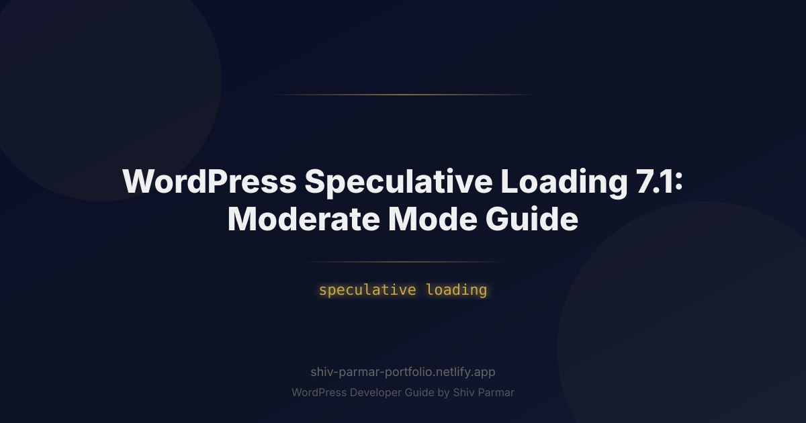

WordPress Speculative Loading 7.1: Moderate Mode | Shiv Parmar
Table of Contents
In the relentless pursuit of sub-second page loads, web performance optimization has undergone a seismic shift. For years, developers relied heavily on traditional caching, asset minification, image compression, and basic <link rel="preload"> tags to trim milliseconds off page load times. While these techniques remain essential foundation blocks, they are fundamentally reactive—they speed up the delivery of assets only after a user explicitly requests a page. In modern web development, waiting for the click is already too late.
WordPress Speculative Loading fundamentally changes this dynamic by moving performance engineering from reactive delivery to predictive execution. Powered by the W3C Speculation Rules API, WordPress can now instruct modern web browsers to speculatively prefetch or full-fidelity prerender pages in the background *before* the user actively clicks a link. When a user finally navigates to a prerendered link, the page displays almost instantly—delivering a zero-latency experience that mirrors native desktop and mobile applications.
However, predictive rendering is a double-edged sword. Prerendering too aggressively can swamp your web server with unnecessary request traffic and drain client memory, while being too cautious yields minimal speed gains. This is where Speculative Loading Moderate Mode comes into play. As the recommended operational baseline for most production environments, Moderate Mode hits the precise sweet spot between maximum performance and intelligent server resource conservation. In this comprehensive guide, we will explore the architecture of WordPress Speculative Loading, dive deep into configuring Moderate Mode, examine code-level customizations, and review operational best practices to supercharge your website's performance.
What is WordPress Speculative Loading 7.1?
WordPress Speculative Loading represents a complete evolution beyond legacy browser resource hints. To understand its significance, it is essential to distinguish between traditional resource prefetching and modern speculative prerendering. Legacy mechanisms like <link rel="prefetch"> or <link rel="prerender"> were limited: prefetching only downloaded the main HTML document or static assets into the HTTP cache, while early prerendering implementations were unstandardized, memory-intensive, and frequently ignored by modern browsers due to privacy and resource concerns.
The modern Speculation Rules API—built natively into Chromium browsers and adopted seamlessly within WordPress—provides a structured, JSON-based framework for defining explicit rule sets. Instead of fetching raw files, speculative prerendering constructs an entire hidden background page context. This background tab parses HTML, executes JavaScript, renders the CSS object model (CSSOM), and constructs the layout tree. When the user initiates navigation, the browser simply swaps the invisible, fully rendered context into the active viewport.
In the WordPress ecosystem, Speculative Loading is designed to work out of the box with zero setup for basic deployments, but offers granular developer hooks for fine-tuning. The feature injects a <script type="speculationrules"> block into the <head> of your HTML pages. This JSON document informs the browser about which internal links on the current document are eligible for prefetching or prerendering based on defined "eagerness" heuristics.
Understanding Eagerness Modes: Moderate vs. Conservative vs. Eager
The Speculation Rules API categorizes execution readiness into four primary eagerness levels: immediate, eager, moderate, and conservative. WordPress simplifies these into three distinct functional modes for site administrators and developers:
| Mode | Trigger Mechanism | Server Load Impact | Perceived Speed Gain | Ideal Use Case |
|---|---|---|---|---|
| Conservative | Triggers strictly on pointerdown or touchstart events (the exact moment a user presses the mouse button or touches the screen). |
Extremely Low | Moderate (~50ms - 150ms saved) | High-traffic sites on budget shared hosting or un-cached dynamic platforms. |
| Moderate Mode | Triggers on pointerdown OR when a cursor hovers over a link for more than 200 milliseconds. |
Balanced / Low | Exceptional (~300ms - 800ms saved) | Standard production websites, blogs, publishing portals, and managed e-commerce. |
| Eager | Triggers immediately when links enter the visible viewport or on the slightest hover interaction. | High to Severe | Maximum (~ instant transitions) | Ultra-high-capacity dedicated server infrastructure with aggressive edge caching. |
Moderate Mode is engineered as the optimal configuration for real-world web applications. By waiting for a 200ms hover threshold, Moderate Mode filters out random cursor movements across the screen. Research in human-computer interaction demonstrates that a user hovering over a link for 200ms indicates a high statistical intent to click. Thus, Moderate Mode ensures that server resources and client bandwidth are expended almost exclusively on pages the user actually intends to view.
Why Speculative Loading Matters in 2026
As web engines and search algorithms continue to refine performance metrics, raw load time has been superseded by holistic user experience indicators. In 2026, meeting Google's Core Web Vitals thresholds—specifically Largest Contentful Paint (LCP) and Interaction to Next Paint (INP)—is vital for both organic search ranking and conversion rate optimization.
Direct Impact on Core Web Vitals
Speculative loading dramatically transforms Core Web Vitals metrics, particularly for sub-page navigations (the journey a user takes from an initial landing page deeper into your website):
- LCP Near Zero: Because the speculative process downloads HTML, resolves CSS, and renders the hero images in an invisible background frame before navigation occurs, the target page's Largest Contentful Paint metric drops to near zero milliseconds upon click.
- Drastic INP Reduction: Interaction to Next Paint measures how quickly a page responds to user inputs. Because navigation to a prerendered page bypasses the traditional network request lifecycle and main-thread parsing delay, the browser frame rate remains stable, preventing visual layout stutters during page transitions.
- Reduced Cumulative Layout Shift (CLS): Web pages that prerender in the background execute their web font loading and layout logic prior to display, eliminating visible layout shifts that often occur while asset dependencies load sequentially.
The E-Commerce and Content Engagement ROI
Speed is direct revenue. Every 100ms of latency reduction correlates directly with increased conversion rates and longer session durations. However, aggressive prerendering on non-optimized servers can backfire by overloading database connections and triggering CPU throttling. Moderate Mode acts as an intelligent governor. It provides near-instantaneous page transitions for engaged users while preventing runaway background processing overhead on your host environment.
Step-by-Step Guide: Implementing and Tuning Moderate Mode
Implementing Speculative Loading Moderate Mode in WordPress can be accomplished through native code hooks or performance optimization plugins. Below is the full operational blueprint for configuring, customization, and fine-tuning Moderate Mode on your environment.
Step 1: Enabling Moderate Mode via PHP Filters
WordPress native speculative loading features default to specific eagerness configurations depending on the site setup. You can explicitly force Moderate Mode across your entire site by introducing a filter into your custom theme’s functions.php file or a custom functionality plugin.
The code snippet below hooks into the wp_speculation_rules array filter, ensuring that the speculation engine applies moderate eagerness specifically to prerender candidate links:
/**
* Force WordPress Speculative Loading to Moderate Mode
*
* @param array $rules The speculative loading rule definitions.
* @return array Modified speculation rules.
*/
function my_custom_enable_moderate_speculative_loading( $rules ) {
// Ensure the main prerender rule object exists
if ( ! isset( $rules['prerender'] ) ) {
$rules['prerender'] = array();
}
// Assign Moderate Mode parameters
$rules['prerender'][] = array(
'source' => 'document',
'where' => array(
'and' => array(
array( 'href_matches' => '/*' ),
array( 'not' => array( 'href_matches' => array( '/wp-admin/*', '/wp-login.php', '/*\\?*' ) ) ),
),
),
'eagerness' => 'moderate',
);
return $rules;
}
add_filter( 'wp_speculation_rules', 'my_custom_enable_moderate_speculative_loading', 20 );
Step 2: Inspecting the Generated Speculation Rules Script
Once activated, open your web browser, view your page source, or open the DevTools Elements panel. You should see an injected JSON script tag residing inside the <head> section of your HTML document that looks similar to this:
<script type="speculationrules">
{
"prerender": [
{
"source": "document",
"where": {
"and": [
{ "href_matches": "/*" },
{
"not": {
"href_matches": [
"/wp-admin/*",
"/wp-login.php",
"/*\\?*"
]
}
}
]
},
"eagerness": "moderate"
}
]
}
</script>
This script tells the browser’s internal speculative layout engine: "Monitor all internal links on this document. If the user hovers over any link for longer than 200ms, or presses down on their pointer, instantly spin up an invisible background page context and prerender the destination URL, unless that URL leads to the admin panel, login screen, or contains query parameters."
Step 3: Excluding Sensitive and Dynamic Routes
One of the most crucial configurations when deploying Moderate Mode is excluding non-cacheable, dynamic, or stateful URLs. Prerendering routes that modify server state or display user-specific sensitive data can lead to unintended side effects or security issues.
You must explicitly exclude the following paths from speculative prerendering:
- Shopping cart and checkout flows (e.g.,
/cart/,/checkout/) - User authentication and account management pages (e.g.,
/my-account/,/login/) - Dynamic search result endpoints (e.g.,
/?s=query) - Custom API endpoints, webhooks, or dynamic action parameters
Here is an advanced production snippet demonstrating how to exclude custom WooCommerce paths and dynamic application routes from Moderate Speculative Loading:
/**
* Advanced Speculative Loading Exclusions for Moderate Mode
*/
function my_custom_advanced_speculation_exclusions( $rules ) {
// Define an array of custom path patterns to exclude
$excluded_paths = array(
'/wp-admin/*',
'/wp-login.php',
'/cart/*',
'/checkout/*',
'/my-account/*',
'/logout/*',
'/*\\?*', // Excludes URLs with query strings to protect search and action triggers
);
// If WooCommerce is active, dynamically include specific endpoints
if ( class_exists( 'WooCommerce' ) ) {
$excluded_paths[] = wc_get_page_permalink( 'cart' );
$excluded_paths[] = wc_get_page_permalink( 'checkout' );
$excluded_paths[] = wc_get_page_permalink( 'myaccount' );
}
// Reconstruct the speculation rules targeting moderate mode
$rules['prerender'] = array(
array(
'source' => 'document',
'where' => array(
'and' => array(
array( 'href_matches' => '/*' ),
array(
'not' => array(
'href_matches' => array_values( array_unique( $excluded_paths ) ),
),
),
array(
'not' => array(
'selector_matches' => '.no-prerender, .no-prerender *',
),
),
),
),
'eagerness' => 'moderate',
),
);
return $rules;
}
add_filter( 'wp_speculation_rules', 'my_custom_advanced_speculation_exclusions', 30 );
Notice the addition of selector_matches in the snippet above. This allows you to exclude specific links directly within your theme template HTML simply by appending a CSS class (e.g., <a href="/custom-action" class="no-prerender">Action</a>).
Step 4: Debugging and Verification in Chrome DevTools
To verify that Moderate Mode is operating correctly on your WordPress site, follow these inspection steps inside Google Chrome (or any Chromium-based browser):
- Open your web page in Chrome and press
F12or right-click and choose Inspect to open Developer Tools. - Navigate to the Application panel tab.
- In the left-hand sidebar menu, scroll down to the Background Services section and click on Speculative Loads.
- Click on the Rules sub-tab to ensure your Speculation Rules JSON script is detected without syntax errors.
- Click on the Speculations sub-tab.
- Now, move your mouse over an internal link on your site and hold the cursor there for at least 200 milliseconds.
- You will see a new entry populate in the Speculations log panel showing the target URL, the action (
prerender), the status (ReadyorSuccess), and the eagerness level (moderate).
If you quickly swipe your cursor over a link in less than 200ms, you will observe that no speculation attempt triggers. This proves that Moderate Mode is effectively filtering out unintentional mouse movements and protecting your backend infrastructure.
Best Practices for Moderate Mode Performance
While Moderate Mode provides a built-in balance between client speed and server load, realizing its full potential requires aligning your broader caching and hosting infrastructure. Implement these architectural best practices to ensure seamless stability.
1. Enforce Object Caching and Server-Side Page Caching
Prerendering triggers real server requests under the hood. If a user hovers over a link, the browser fires an HTTP GET request to your WordPress host. If that page request hits an un-cached PHP environment, your server must process MySQL database queries, execute WordPress hooks, and dynamically assemble the layout in real-time.
If multiple users hover over multiple links in quick succession, un-cached environments will experience severe CPU spikes. To run Moderate Mode safely:
- Ensure an active full-page caching layer is active (such as NGINX FastCGI Cache, Varnish, LiteSpeed, or an Edge CDN cache like Cloudflare Worker HTML Caching).
- Implement persistent object caching using Redis or Memcached to minimize database execution bottlenecks when uncached hits occur.
2. Handle Analytics and Ad Impression Double-Counting
Because speculative prerendering loads and executes the full DOM in an invisible background frame, standard JavaScript scripts—such as tracking pixels, Google Tag Manager scripts, or ad networks—can potentially register false pageviews if not configured correctly.
Modern analytics libraries (including Google Analytics 4) are natively updated to delay firing events on speculatively prerendered pages until the document state switches from prerender to visible. However, if you write custom telemetry or event-tracking code, you must wrap your execution handlers in a page visibility check:
// Example JavaScript check for Speculative Loading state
function trackPageView() {
console.log("Pageview registered successfully.");
}
if (document.prerendering) {
// Wait until the user actually activates and views the prerendered page
document.addEventListener('prerenderingchange', () => {
if (!document.prerendering) {
trackPageView();
}
}, { once: true });
} else {
// Document is already visible
trackPageView();
}
3. Manage Memory and Device Hardware Offloading
Modern mobile devices and low-spec hardware have constrained system memory. Chromium engines automatically adjust speculation rules based on current CPU, RAM, and battery saver settings. If a user enables "Data Saver" mode or "Low Power Mode" on their OS, the browser will downscale speculative actions from prerender down to basic prefetch or ignore speculative rules entirely.
Do not attempt to override these native client safeguards via aggressive custom JavaScript polyfills. Allow the browser engine to enforce hardware safety limits autonomously while using WordPress Moderate Mode as the standard rule declaration.
Architectural Configuration Matrix
| Layer | Recommended Setup | Role in Speculative Loading |
|---|---|---|
| Edge / CDN | Cloudflare / Fastly / QUIC.cloud | Serves prerender HTTP GET requests instantly from edge nodes, preventing requests from reaching the origin server. |
| Application Cache | Redis Object Cache + NGINX Page Cache | Guarantees sub-50ms server response times if a prefetch request bypasses the CDN. |
| Browser Engine | Speculation Rules JSON (Moderate) | Executes DOM construction in an invisible worker thread after a 200ms hover delay. |
| Client JS | Visibility API Listeners | Prevents custom analytics, dynamic ads, and state mutation scripts from executing until user activation. |
Common Mistakes to Avoid
Deploying predictive rendering features without proper auditing can lead to subtle bugs, dynamic data corruption, or unexpected server issues. Avoid these common pitfalls when deploying Moderate Mode on WordPress:
1. Prerendering State-Changing Actions
Never allow speculative rules to match URLs that perform side-effect operations when accessed via HTTP GET requests. For example, if a link on your site executes an action upon loading—such as /wishlist/add?id=102, /cart/empty, or /logout—speculatively prerendering that link will execute the action behind the scenes without the user ever clicking it!
Solution: Ensure all state-changing actions on your website utilize proper HTTP POST, PUT, or DELETE request methods, or explicitly block these request paths inside the where exclusion array of your speculative rules filter.
2. Overriding Moderate Mode to Eager on Standard Hosting
It is tempting to switch your speculation settings from moderate to eager in pursuit of raw speed metrics. However, setting eagerness to eager causes the browser to prerender links instantly as soon as they scroll into view inside the viewport.
On a blog archive page featuring 20 article cards, an eager setting will attempt to spawn multiple simultaneous background background page instances. On standard shared or VPS hosting platforms, this causes instantaneous server congestion, high CPU usage spikes, and memory throttling, resulting in performance degradation for all visitors.
3. Ignoring User Session Cookies and Dynamic Personalization
If your WordPress site uses dynamic page personalization based on session cookies (e.g., displaying "Welcome back, [Name]" inside the main navigation bar), speculative prerendering can cause cached HTML snapshots of personalized headers to display incorrectly across visitors if server-side page caching is misconfigured.
Ensure your server cache varies correctly by session cookies (such as wordpress_logged_in_*) or use client-side JavaScript hydration to load dynamic user data after the main layout frame completes its transition.
4. Forgetting Custom Exclusions for Third-Party Plugins
Many WordPress plugins introduce custom frontend parameters and dynamic endpoints (e.g., booking engines, membership portals, form builders, filter plugins). When configuring Moderate Mode, perform a thorough crawl audit of your site to identify any custom paths added by active plugins and update your exclusion rules accordingly.
/**
* Comprehensive Exclusions Checklist Filter
*/
function my_custom_plugin_compatibility_exclusions( $rules ) {
$third_party_exclusions = array(
'/booking/*',
'/download/*',
'/*add-to-cart=*',
'/*account/*',
);
if ( isset( $rules['prerender'][0]['where']['and'][1]['not']['href_matches'] ) ) {
$existing_exclusions = $rules['prerender'][0]['where']['and'][1]['not']['href_matches'];
$merged_exclusions = array_merge( $existing_exclusions, $third_party_exclusions );
$rules['prerender'][0]['where']['and'][1]['not']['href_matches'] = array_values( array_unique( $merged_exclusions ) );
}
return $rules;
}
add_filter( 'wp_speculation_rules', 'my_custom_plugin_compatibility_exclusions', 40 );
5. Neglecting Non-Chromium Browser Testing
While modern Chromium browsers (Chrome, Edge, Brave, Opera) fully support the Speculation Rules API, non-Chromium browsers (such as Safari and Firefox) may process or ignore these rules according to their independent implementation schedules. A common mistake is building custom navigation scripts that strictly rely on speculation API events without maintaining standard fallback behavior.
Always structure your theme JavaScript gracefully. Progressive enhancement ensures that Chromium users receive near-instantaneous page transitions, while non-Chromium users continue to experience standard, optimized HTML page loads without broken link behavior.
Conclusion
Implementing the Speculative Loading API in WordPress—specifically through Moderate Mode—offers a balanced, intelligent approach to page preloading. By predicting user navigation without overwhelming server resources, this feature delivers a noticeable boost to your site's overall performance. Whether you are running an e-commerce store or a high-traffic content platform, fine-tuning these settings ensures your visitors enjoy near-instant page loads while keeping bandwidth and server demands well-managed.
As modern web standards evolve, taking advantage of browser capabilities through speculative loading is fast becoming an essential strategy for speed optimization. While Moderate Mode provides a reliable sweet spot for most website configurations, maximizing your performance often requires careful testing, tailored caching, and a comprehensive development approach. Fine-tuning these preloading techniques will ultimately keep your user experience smooth and your Core Web Vitals firmly in the green.
Ready to unlock the full potential of your website's speed and user experience? Shiv Parmar is an experienced WordPress developer available for hire worldwide, specializing in performance optimization, custom API integrations, and bespoke development. Reach out to Shiv Parmar today to take your WordPress project to the next level.